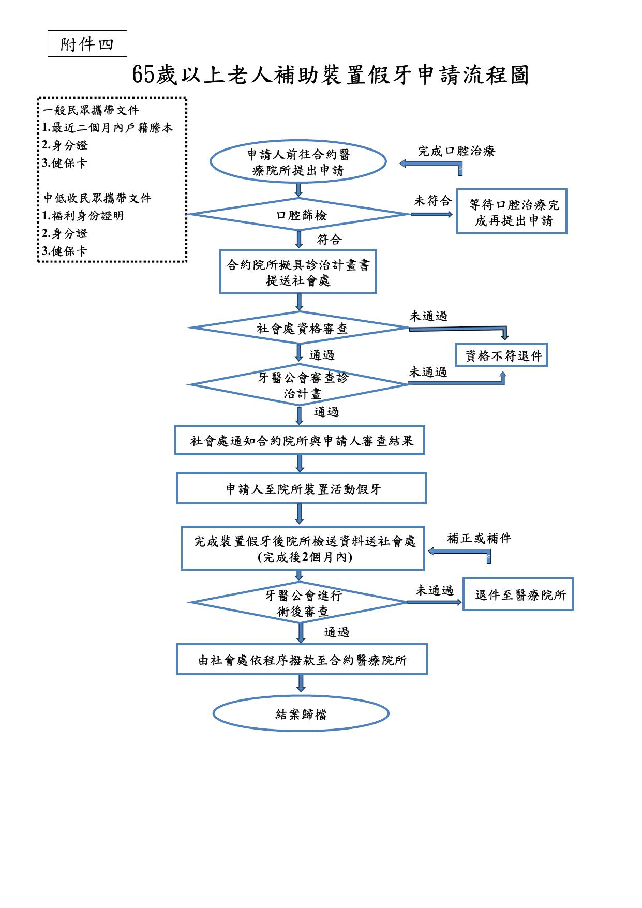

花蓮縣65歲以上長者假牙補助申請須知（Q&A）
以下說明整理自花蓮縣政府社會處公告之「115年花蓮縣65歲以上長者假牙補助」計畫內容及「醫療院所申請 假牙補助常見問答（Q&A）」，僅供參考，實際規定請洽花蓮縣政府社會處為準；本頁下方之「合約醫療 院所名單」為政府公告資料，可依縣市、鄉鎮市、機構類型與關鍵字篩選查詢。
📝 補助對象
Q1：一般長者的申請資格為何？
- 年滿65歲以上。
- 於112年1月1日前設籍本縣滿3年者。
Q2：中低收入戶等福利身分長者的申請資格為何？
年滿65歲以上或55歲以上原住民，且設籍本縣符合下列資格之一：
- A. 低收入戶、中低收入戶。
- B. 中低收入老人生活津貼。
- C. 身心障礙生活補助。
- D. 政府全額補助收容安置或接受政府補助住宿照顧服務達50%以上者。
Q3：中低收入戶長者可以選擇以一般身分申請補助嗎？
可以。符合中低收入戶資格之長者，可自行選擇以一般身分申請，但補助 金額比照一般長者每5年最高5萬元整；若選福利身分申請，則最高補助每5年5萬5千元整。
Q4：65歲以上原住民族長者應申請哪一項補助？
- 單純原住民身分長者：申請本府原民處辦理「原住民族長者裝置假牙實施計畫」。
- 同時具原住民身分及社福資格者：可申請本府社會處辦理「65歲以上長者假牙補助實施計畫」 第二類（福利身分資格）。
Q5：凡符合「原住民族長者裝置假牙補助計畫」或「秀林鄉公所假牙補助」資格者，可以重複申請本計畫嗎？
不可以。凡符合上述兩項計畫補助資格者，與本計畫不得重複申請。同時 符合原住民長者與中低收身分者，應以申請本計畫為優先。
📅 受理申請時間與應備文件
Q6：受理申請時間為何？
自115年6月1日起受理申請，至經費用罄為止。目前補助名額暫不設限， 將持續受理醫療院所接受長者申請案件；建議院所依自身量能評估收案情形，以確保治療品質及長者 權益。
Q7：應備文件有哪些？
一般長者：
- 最近2個月內戶籍謄本。
- 身分證。
- 健保卡。
中低收入戶等福利身分長者：
- 福利身分證明文件。
- 身分證。
- 健保卡。
📋 申請流程
Q8：申請流程共有哪些步驟？
- 準備文件：一般長者準備戶籍謄本；中低收入戶等福利身分長者準備福利身分 證明。
- 電話詢問：先電話詢問牙科醫療院所是否受理補助申請。
- 提出申請：至牙科醫療院所口腔檢查後，符合補助狀態，由院所協助送件申請。
- 審查通知：本府審查後通知結果。
- 假牙裝置：核定通過後進行假牙製作及裝置。

Q9：申請計劃書寄送到哪裡？
970 花蓮縣花蓮市府前路17號 花蓮縣政府社會處福利科（假牙補助計畫） 收，連絡電話：03-8227171#382。
Q10：尚未列入公開合約院所名單的診所，可以協助民眾申請嗎？
可以。目前全縣計86間健保特約牙科醫療院所，願意公開資訊供民眾查詢 之醫療院所計37間（即下方名單），未列入公開名單之診所，仍可協助長者申請本計畫。
Q11：申請案件送件後，何時可得知審查結果？
案件完成審查後，預計於2週左右以書面通知醫療院所及長者審查結果。
Q12：申請固定假牙時申請表需檢附哪些影像或照片？
- 全臉正面露齒照1張（包括健保卡）。
- 口內上顎照1張。
- 口內下顎照1張。
- 根尖片或環口X光影像1張。共4張影像。
🦷 補助金額與補助標準
Q13：服務對象5年內最高補助金額不得逾多少？
一般65歲以上長者5年內最高補助金額不得逾新臺幣5萬元；中低收長者 5年內不得逾新臺幣5萬5,000元，惟假牙維修不在此限。
Q14：同一顎或同一牙位已取得補助，多久後才能重新申請？
申請活動假牙者，同一顎或同一牙位已取得相同補助項目者，須於年滿 5年以上，經評估有重新裝置之必要，始得重新提出申請。
Q15：假牙補助款是否直接撥付給民眾？
不會。本計畫補助款均直接撥付予執行診治之醫療院所，不會將補助費用 直接發放給民眾，除非有特殊情形專案辦理。
Q16：一般身分與福利身分之差額收費規定有何不同？
- 一般身分：可依假牙材料不同選擇製作假牙並收取差額。
- 社福資格身分：活動假牙不得收取差額；固定假牙得依規定收取差額。
以上兩種相關收費仍應符合花蓮縣牙醫醫療機構收費標準規定。
💰 核銷流程
Q17：核銷時，一般長者與中低收入戶長者的收據可以合併開立嗎？
不可以。一般身分與福利身分案件須分別開立收據辦理核銷；但同一補助 類別案件則可合併開立一張收據辦理核銷。
Q18：計畫書審查完成後，核銷時需再檢附完整計畫書嗎？
需要，核銷時檢附以下文件：
- 原審核通過之申請暨診治計畫書及相關審查文件。
- 術後照片（黏貼於原申請暨診治計畫書內）。
- 收據（2人以上需含清冊）與醫療院所存摺影本，寄送至本府辦理核銷撥款。
☎️ 其他／洽詢資訊
Q19：如果醫療院所向中低收入戶民眾收了差額，病人申訴會如何處理？
如民眾或醫療院所有申訴爭議，將依計畫書成立調處機制：邀集公會代表、 相關人員及本縣衛生局醫療業務主管代表，共同召開調處委員會妥處。
Q20：有問題可以洽詢哪個單位？
洽詢單位：花蓮縣政府社會處福利科（假牙補助計畫），連絡電話： 03-8227171#382，地址：970 花蓮縣花蓮市府前路17號。
合約醫療院所名單
資料明細
本資料集共37筆，來源為花蓮縣政府社會處公告「花蓮縣115年度65歲以上長者假牙補助裝置醫療院所公開 名單」PDF。其中1筆（合諧牙醫診所）為跨縣市特約診所，位於臺東縣境內而非花蓮縣， 如實列於名單中，可用上方「縣市」篩選查看。「機構類型」（醫院／衛生所／牙醫診所）依機構名稱是否 含「醫院」「衛生所」關鍵字啟發式推斷，非官方分類欄位，僅供參考；無經緯度座標，故本頁不含地圖。 表格中 Google Map 星等與評論數為2026-08-08一次性抓取之快照，不會隨時間自動更新，實際星等與評論 請以 Google 地圖當下顯示為準。